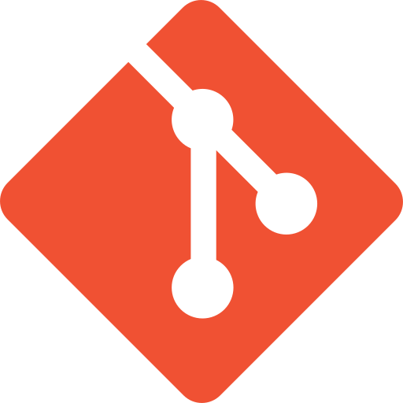

From a local container to an automated AWS deployment.
A custom Flask and Redis lab tracker, containerised with Docker and deployed to ECS Fargate. Built manually in the AWS Console, recreated with Terraform, and automated with GitHub Actions.
Private ECS tasks behind an HTTPS load balancer
Terraform modules and remote state
GitHub OIDC authentication and image publishing to ECR
Supporting projects completed through the CoderCo DevOps Bootcamp. Repositories include configuration, screenshots and troubleshooting notes.
02 / THE TOOLKIT
Tools I build with.
Developed through hands-on projects, troubleshooting and continuous learning.
AWS
Cloud infrastructure
Terraform
Infrastructure as Code
Docker
Containers & Compose
Kubernetes
Next learning focus
Linux
Systems & scripting

Git
Version control
CI/CD
GitHub Actions
03 / BEHIND THE BUILDS
The engineer behind the terminal.
Ravi GordonIT Support & Infrastructure → DevOps & Cloud
RG INFRASTRUCTURE LABS
I build, break and troubleshoot infrastructure—then figure out how to make it better.
I’m Ravi, an IT professional with a background in IT Support and Infrastructure, working towards DevOps and Cloud Engineering through hands-on projects and the CoderCo DevOps Bootcamp.
My curiosity extends beyond the workplace. Through RG Infrastructure Labs, my personal homelab, I explore Proxmox, Linux, networking, Docker and self-hosted services. It gives me somewhere to experiment, investigate failures and understand how systems work together.
That same approach shapes my cloud projects. From deploying web servers on AWS to provisioning infrastructure with Terraform and automating workflows with GitHub Actions, I turn technical concepts into working, documented builds. My flagship project, RG Lab Tracker, brings Docker, AWS ECS Fargate, Terraform and CI/CD together in one deployment.
I learn by building manually, troubleshooting what breaks, then automating what I understand. I’m continuing to develop my cloud skills, with Kubernetes and EKS next.